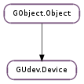

| get_action() | |
| get_device_file() | |
| get_device_file_symlinks() | |
| get_device_number() | |
| get_device_type() | |
| get_devtype() | |
| get_driver() | |
| get_is_initialized() | |
| get_name() | |
| get_number() | |
| get_parent() | |
| get_parent_with_subsystem(subsystem, devtype) | |
| get_property(key) | |
| get_property_as_boolean(key) | |
| get_property_as_double(key) | |
| get_property_as_int(key) | |
| get_property_as_strv(key) | |
| get_property_as_uint64(key) | |
| get_property_keys() | |
| get_seqnum() | |
| get_subsystem() | |
| get_sysfs_attr(name) | |
| get_sysfs_attr_as_boolean(name) | |
| get_sysfs_attr_as_double(name) | |
| get_sysfs_attr_as_int(name) | |
| get_sysfs_attr_as_strv(name) | |
| get_sysfs_attr_as_uint64(name) | |
| get_sysfs_path() | |
| get_tags() | |
| get_usec_since_initialized() | |
| has_property(key) |
None
None
| Name | Type | Access |
|---|---|---|
| parent | GObject.Object | r |
Bases: GObject.Object
The GUdev.Device class is used to get information about a specific device. Note that you cannot instantiate a GUdev.Device object yourself. Instead you must use GUdev.Client to obtain GUdev.Device objects.
To get basic information about a device, use GUdev.Device.get_subsystem (), GUdev.Device.get_devtype (), GUdev.Device.get_name (), GUdev.Device.get_number (), GUdev.Device.get_sysfs_path (), GUdev.Device.get_driver (), GUdev.Device.get_action (), GUdev.Device.get_seqnum (), GUdev.Device.get_device_type (), GUdev.Device.get_device_number (), GUdev.Device.get_device_file (), GUdev.Device.get_device_file_symlinks ().
To navigate the device tree, use GUdev.Device.get_parent () and GUdev.Device.get_parent_with_subsystem ().
To access udev properties for the device, use GUdev.Device.get_property_keys (), GUdev.Device.has_property (), GUdev.Device.get_property (), GUdev.Device.get_property_as_int (), GUdev.Device.get_property_as_uint64 (), GUdev.Device.get_property_as_double (), GUdev.Device.get_property_as_boolean () and GUdev.Device.get_property_as_strv ().
To access sysfs attributes for the device, use GUdev.Device.get_sysfs_attr (), GUdev.Device.get_sysfs_attr_as_int (), GUdev.Device.get_sysfs_attr_as_uint64 (), GUdev.Device.get_sysfs_attr_as_double (), GUdev.Device.get_sysfs_attr_as_boolean () and GUdev.Device.get_sysfs_attr_as_strv ().
Note that all getters on GUdev.Device are non-reffing – returned values are owned by the object, should not be freed and are only valid as long as the object is alive.
By design, GUdev.Device will not react to changes for a device – it only contains a snapshot of information when the GUdev.Device object was created. To work with changes, you typically connect to the GUdev.Client ::uevent signal on a GUdev.Client and get a new GUdev.Device whenever an event happens.
| Returns: | An action string. |
|---|---|
| Return type: | str |
Gets the most recent action (e.g. “add”, “remove”, “change”, etc.) for device.
| Returns: | The device file for device or None if no device file exists. |
|---|---|
| Return type: | str |
Gets the device file for device.
| Returns: | A None terminated string array of symlinks. This array is owned by device and should not be freed by the caller. |
|---|---|
| Return type: | [str] |
Gets a list of symlinks (in /dev) that points to the device file for device.
| Returns: | The device number for device or 0 if unknown. |
|---|---|
| Return type: | int |
Gets the device number, if any, for device.
| Returns: | The device number for device or GUdev.DeviceType.NONE if the device does not have a device file. |
|---|---|
| Return type: | GUdev.DeviceType |
Gets the type of the device file, if any, for device.
| Returns: | The name of the driver for device or None if unknown. |
|---|---|
| Return type: | str |
Gets the name of the driver used for device.
| Returns: | Whether device has been initialized. |
|---|---|
| Return type: | bool |
Gets whether device has been initalized.
| Returns: | The number of device. |
|---|---|
| Return type: | str |
Gets the number of device, e.g. “3” if GUdev.Device.get_name () returns “sda3”.
| Returns: | A GUdev.Device or None if device has no parent. Free with GObject.Object.unref (). |
|---|---|
| Return type: | GUdev.Device |
Gets the immediate parent of device, if any.
| Parameters: | |
|---|---|
| Returns: | A GUdev.Device or None if device has no parent with subsystem and devtype. Free with GObject.Object.unref (). |
| Return type: |
Walks up the chain of parents of device and returns the first device encountered where subsystem and devtype matches, if any.
| Parameters: | key (str) – Name of property. |
|---|---|
| Returns: | The value for key or None if key doesn’t exist on device. Do not free this string, it is owned by device. |
| Return type: | str |
Look up the value for key on device.
| Parameters: | key (str) – Name of property. |
|---|---|
| Returns: | The value for key or False if key doesn’t exist or isn’t a bool. |
| Return type: | bool |
Look up the value for key on device and convert it to an boolean. This is done by doing a case-insensitive string comparison on the string value against “1” and “true”.
| Parameters: | key (str) – Name of property. |
|---|---|
| Returns: | The value for key or 0.0 if key doesn’t exist or isn’t a float. |
| Return type: | float |
Look up the value for key on device and convert it to a double precision floating point number using strtod().
| Parameters: | key (str) – Name of property. |
|---|---|
| Returns: | The value for key or 0 if key doesn’t exist or isn’t an integer. |
| Return type: | int |
Look up the value for key on device and convert it to an integer using strtol().
| Parameters: | key (str) – Name of property. |
|---|---|
| Returns: | The value of key on device split into tokens or None if key doesn’t exist. This array is owned by device and should not be freed by the caller. |
| Return type: | [str] |
Look up the value for key on device and return the result of splitting it into non-empty tokens split at white space (only space (‘ ‘), form-feed (‘\f’), newline (‘\n’), carriage return (‘\r’), horizontal tab (‘\t’), and vertical tab (‘\v’) are considered; the locale is not taken into account).
| Parameters: | key (str) – Name of property. |
|---|---|
| Returns: | The value for key or 0 if key doesn’t exist or isn’t a #guint64. |
| Return type: | int |
Look up the value for key on device and convert it to an unsigned 64-bit integer using GLib.ascii_strtoull ().
| Returns: | A None terminated string array of property keys. This array is owned by device and should not be freed by the caller. |
|---|---|
| Return type: | [str] |
Gets all keys for properties on device.
| Returns: | A sequence number. |
|---|---|
| Return type: | int |
Gets the most recent sequence number for device.
| Parameters: | name (str) – Name of the sysfs attribute. |
|---|---|
| Returns: | The value of the sysfs attribute or None if there is no such attribute. Do not free this string, it is owned by device. |
| Return type: | str |
Look up the sysfs attribute with name on device.
| Parameters: | name (str) – Name of the sysfs attribute. |
|---|---|
| Returns: | The value of the sysfs attribute or False if there is no such attribute. |
| Return type: | bool |
Look up the sysfs attribute with name on device and convert it to an boolean. This is done by doing a case-insensitive string comparison on the string value against “1” and “true”.
| Parameters: | name (str) – Name of the sysfs attribute. |
|---|---|
| Returns: | The value of the sysfs attribute or 0.0 if there is no such attribute. |
| Return type: | float |
Look up the sysfs attribute with name on device and convert it to a double precision floating point number using strtod().
| Parameters: | name (str) – Name of the sysfs attribute. |
|---|---|
| Returns: | The value of the sysfs attribute or 0 if there is no such attribute. |
| Return type: | int |
Look up the sysfs attribute with name on device and convert it to an integer using strtol().
| Parameters: | name (str) – Name of the sysfs attribute. |
|---|---|
| Returns: | The value of the sysfs attribute split into tokens or None if there is no such attribute. This array is owned by device and should not be freed by the caller. |
| Return type: | [str] |
Look up the sysfs attribute with name on device and return the result of splitting it into non-empty tokens split at white space (only space (‘ ‘), form-feed (‘\f’), newline (‘\n’), carriage return (‘\r’), horizontal tab (‘\t’), and vertical tab (‘\v’) are considered; the locale is not taken into account).
| Parameters: | name (str) – Name of the sysfs attribute. |
|---|---|
| Returns: | The value of the sysfs attribute or 0 if there is no such attribute. |
| Return type: | int |
Look up the sysfs attribute with name on device and convert it to an unsigned 64-bit integer using GLib.ascii_strtoull ().
| Returns: | The sysfs path for device. |
|---|---|
| Return type: | str |
Gets the sysfs path for device.
| Returns: | A None terminated string array of tags. This array is owned by device and should not be freed by the caller. |
|---|---|
| Return type: | [str] |
Gets all tags for device.